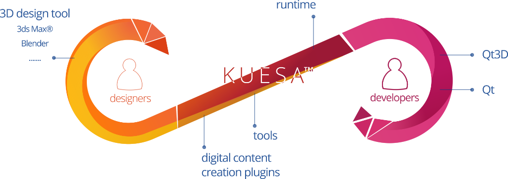

Kuesa Overview
Kuesa's workflow
There are traditionally two main workflows to integrate real-time 3D content into an application:
- Hand-made workflow: the designers create mockups of the scenes and the developers recreate them in code, leading to lots of communication overhead, misunderstandings and suboptimal results.
- External tool workflow: the designers and developers work on a common tool for editing the scene for integrating into the application limiting both to the constraints of the tool and creating a black box which provides little control.
Kuesa provides an easy, integrated and unified workflow without any compromises for designers and developers with:
- Great performances, from desktops to embedded boards
- Great quality of the real-time 3D scenes
- Full expressiveness for the designers, using professional 3D design tools
- Full control of the integration by the developers
- A reduced time to market
The workflow is based on the glTF™ (GL Transmission Format) format designed by the Khronos Group, a royalty-free specification for the efficient transmission and loading of 3D scenes and models by applications supporting vendor extension.
Kuesa's strengths
- Uses professional 3D design tools for scene creation: 3ds Max®, Blender…
- Provides tools for previewing, optimizing, checking and optimizing assets
- Provides a seamless integration in Qt and Qt3D applications
- Gives full control of the scene from the code, for complex interaction
Kuesa components

Kuesa Digital Content Creation Plugins
Checkout out our video tutorial on how prepare your assets for Kuesa with 3ds max.
Kuesa Runtime
The Kuesa Runtime provides C++ and QML APIs to ease incorporation of 3D content into Qt 3D based applications.
- glTF2 compliant importer that generates a Qt 3D based scene
- Custom PBR materials
- Asset collections to retrieve assets by name
- Post Processing Effects
Checkout out our video tutorial on creating an interactive 3D application with Kuesa.
Kuesa Tools
A set of tools to preview scenes
- gltfEditor
- gltfViewer
- ddspreviewer
- cubemaptooctahedralmap
Kuesa Runtime Features
glTF 2 Importer
The class GLTF2Importer is a Qt3DCore::QNode based class that allows loading glTF 2 files. glTF 2 files from any exporter should work, note however that the Kuesa specific exporter allow the use of additional features, namely:
- Qt 3D compatible PBR Material support
- Qt 3D layer export
- Face wireframe export
Once a file has been loaded through the use of the glTF 2 importer, name based collections are populated. Kuesa provides the following collections for:
- Entities
- Animation Clips
- Animation Mappings
- Cameras
- Effects
- Materials
- Meshes
- Skeletons
- Textures
- Images
Kuesa Optimized Frame Graph
Kuesa provides the ForwardRenderer Frame Graph which is optimized for the rendering of glTF2 scenes with the addition of post processing effects.
Full Screen Post Processing Effects
Final screen composition can be customized through the use of post processing effects. The effects work along with the default provided Kuesa FrameGraph ForwardRenderer.
Currently Kuesa provides the following effects:
More information about post-processing effects is provided here: Kuesa post-processing effects.